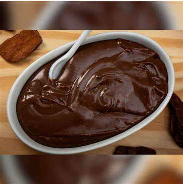

Descubra a melhor receita de Brigadeiro

-
Receita de brigadeiro:
Em uma panela, coloque o leite condensado, a manteiga e o achocolatado em pó.
Leve ao fogo baixo e mexa constantemente.
Quando a mistura começar a desgrudar do fundo da panela, adicione o creme de leite e
continue mexendo até que a mistura fique cremosa e homogênea.
Retire do fogo e deixe esfriar por alguns minutos.
Transfira o brigadeiro para potes pequenos ou tigelas individuais e decore com
granulado a gosto.
Sirva o brigadeiro de colher imediatamente ou leve à geladeira por algumas horas para
intensificar o sabor.